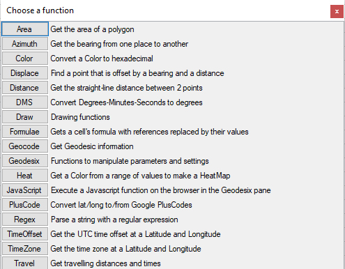
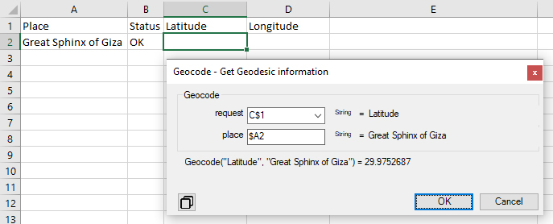
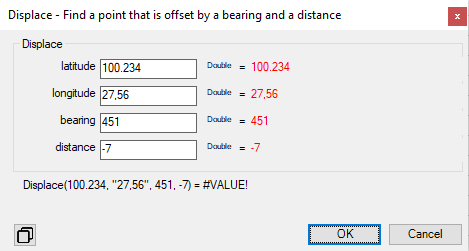

Insert Formula provides guided prompts to create Geodesix formulas.
The first dialog is used to choose the formula:

Clicking a function name shows the second dialog to enter the arguments:

The arguments' values can be populated in several ways:
- Picking a value from the dropdown.
- Clicking on the desired cell. Here, when the dialog opened, C1 and A2 were clicked. Notice the form the cell references: Cells above the formula - Latitude - have absolute row; cells left of the formula have absolute column. This makes it easier to extend formulas.
- Typing a value. It will be interpreted as an Excel name, if it exists. If it doesn't, it will be interpreted as a string.
Whenever the focus changes, the values are validated and errors are highlighted in red:

A latitude cannot exceed 90°. The longitude has a comma instead of decimal. A bearing cannot exceed 360°. A distance cannot be negative.